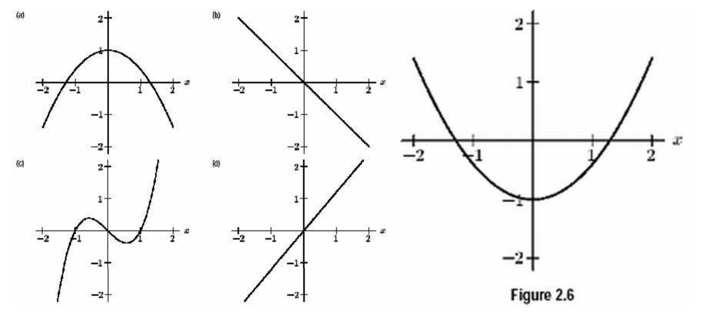
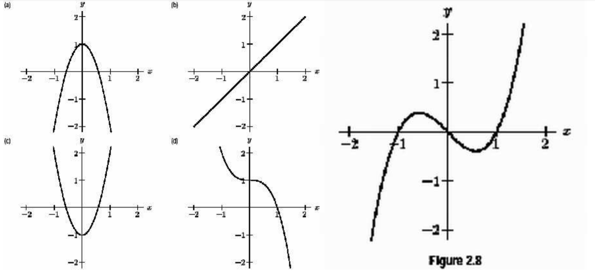
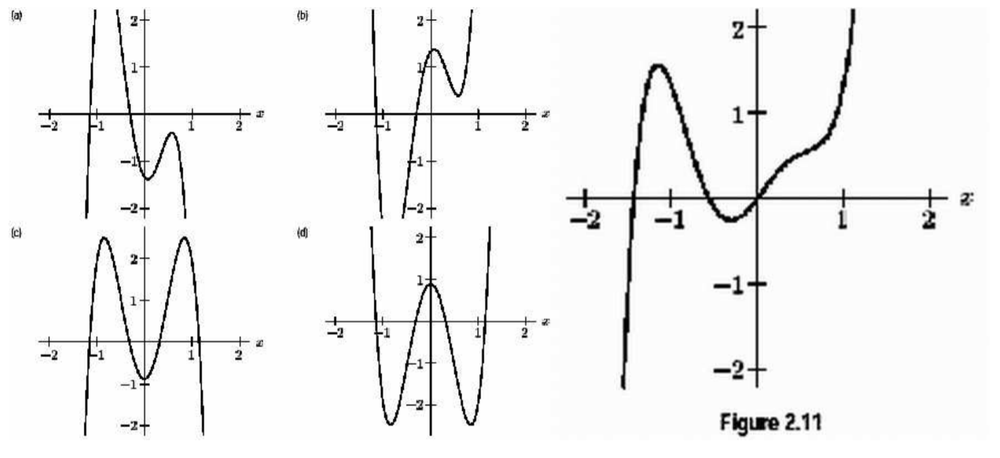
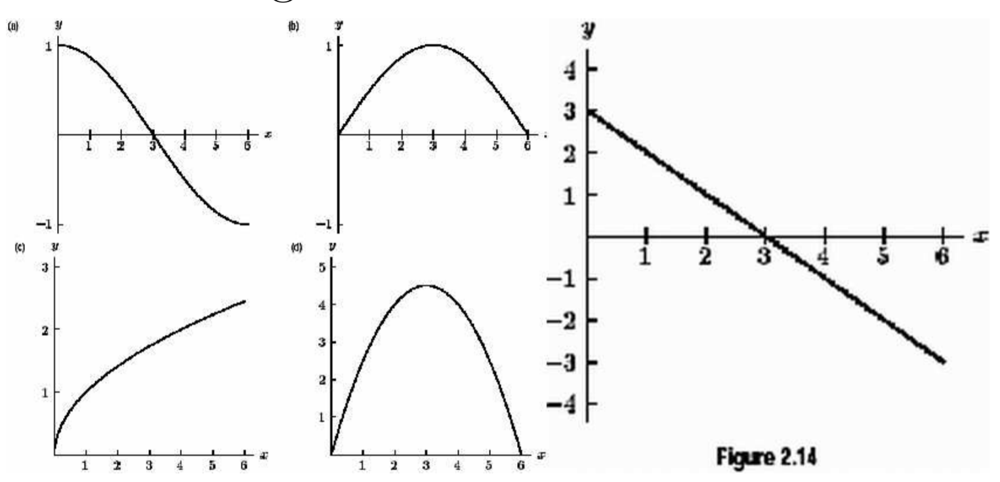
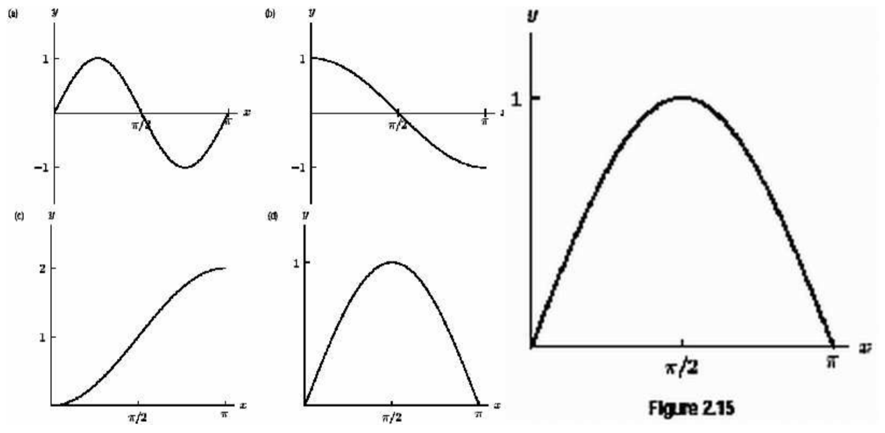

Sketch the graphs of \(f'(x), f''(x)\), and \(f'''(x)\) for \(f(x)\) shown below.

Consider the growth of a tumor. One way to measure tumor size is number of cells.
The Gompertz model is a function sometimes used to model the number of cells.
\(\displaystyle N(t) = N_{\infty} e^{\ln \left( \frac{N_0}{N_{\infty}}\right)e^{-bt}}\)
Here \(N_0\) is the initial number of cells. The applet below graphs \(N(t)\). Can you figure out what \(N_{\infty}, b\) do?
What does \(N'(t)\) represent? What are the units of \(N'(t)\)?
Can you use the applet below to estimate \(N'(1)\) if \(N_0=1, N_{\infty}=1000, b=0.05\)?
Which of the following graphs is the graph of the
derivative of the function shown on the right?

Which of the following graphs is the graph of the
derivative of the function shown on the right?

Which of the following graphs is the graph of the
derivative of the function shown on the right?

The graph on the right is the derivative of which of
the following functions?

The graph on the right is the derivative of which of
the following functions?

Sketch the graphs of \(f'(x), f''(x)\), and \(f'''(x)\) for \(f(x)\) shown below.